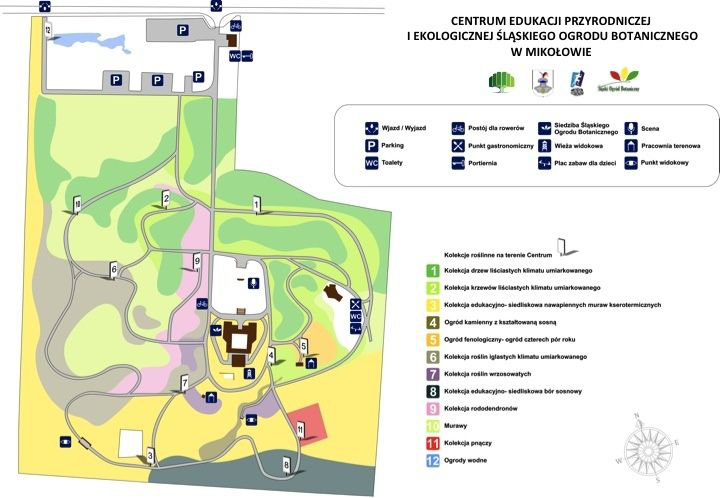

Usytuowanie ogrodu
Śląski Ogród Botaniczny znajduje się nadto w bliskiej lokalizacji autostrady A4, w pobliżu dróg krajowych 44 i 81 w bezpośrednim sąsiedztwie drogi wojewódzkiej 927. Na Sośniej Górze, dawnym terenie wojskowym, należącym do jednostki rakietowej, znajduje się Centrum Edukacji Przyrodniczej i Ekologicznej (CEPiE) Śląskiego Ogrodu Botanicznego. Zachowano część dawnych obiektów wojskowych (bunkier-magazyn rakiet, centrum dowodzenia) i zaadaptowano do nowych celów; wybudowano także wieżę widokową.
